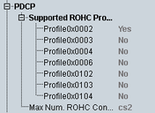

PDCP UE Capabilities
The following UE capability information indicates in which way the UE supports the packet data convergence protocol (PDCP) described in 3GPP TS 36.323.

PDCP UE capabilities
Support of the robust header compression profiles with the stated profile identifiers (0x0002, 0x0003, ...).
The profiles are defined in 3GPP TS 36.323, Table 5.5.1.1.
Remote command:Maximum number of header compression context sessions supported by the UE.
Remote command: